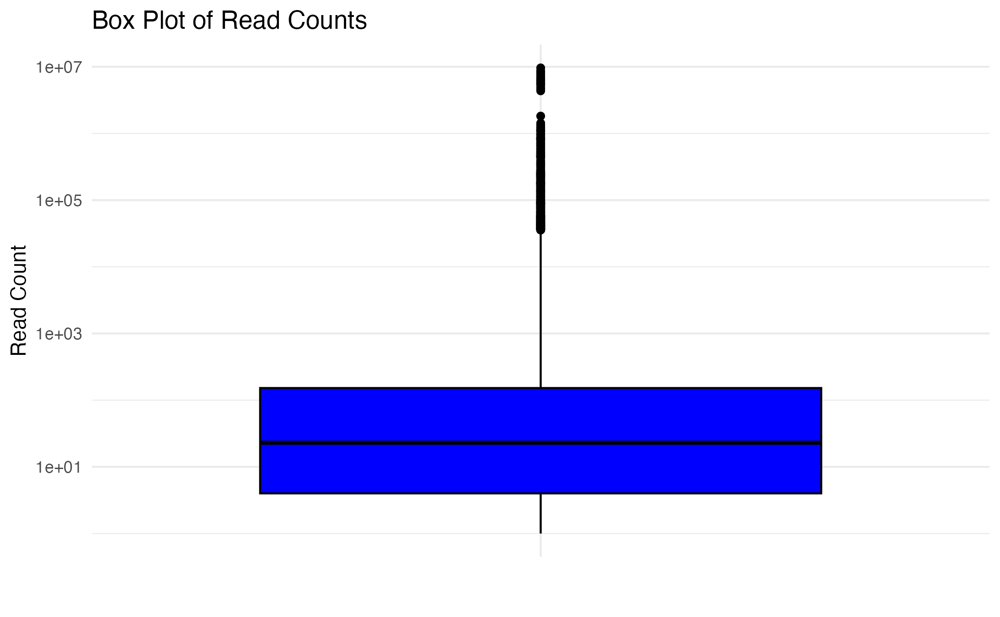
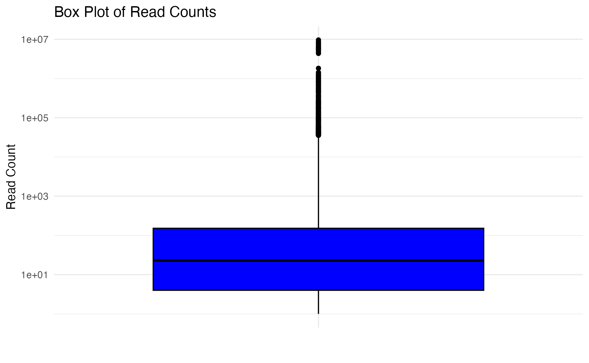
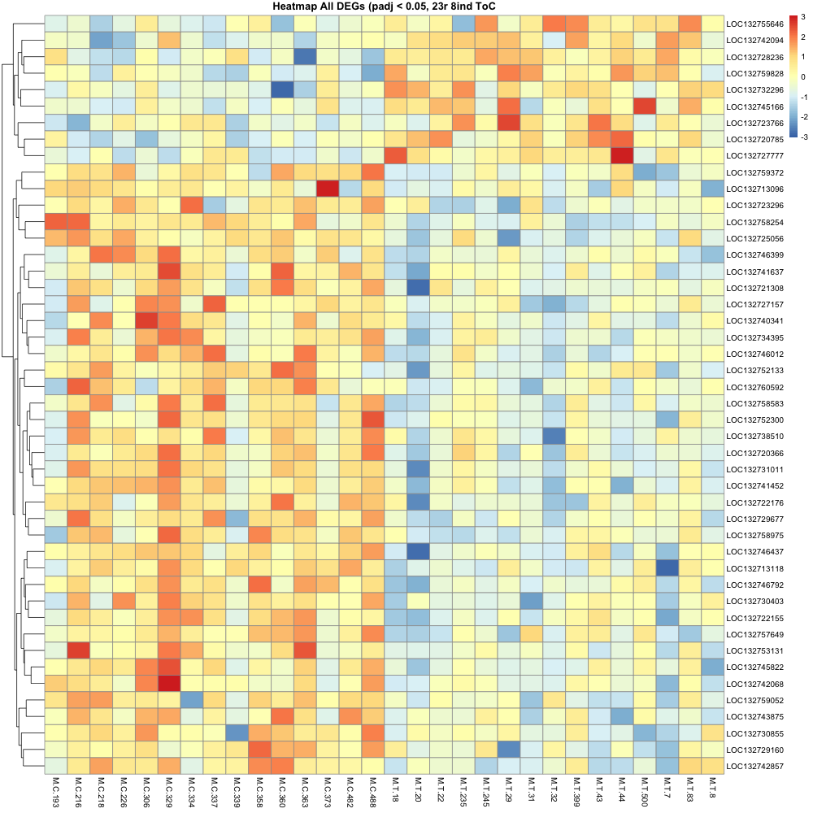
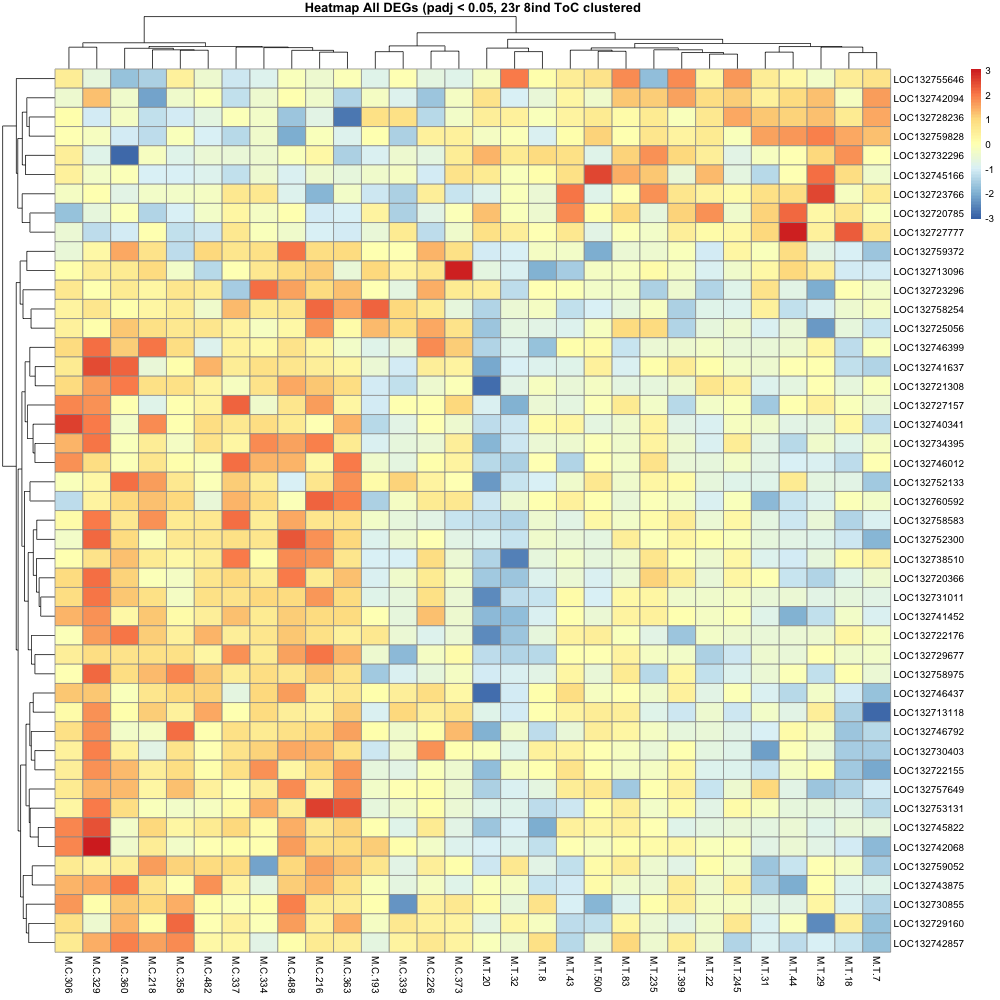

August 7th
August goals, submitted masters committee milestone. Based off of what Mac and i discussed last week, I went back to trying different pre-filtering parameters and decided to take a different approach. Created histogram, boxplot, and generated summary stats for all of the count data to see how they were spread. We knew the rRNA was eating up a ton of the reads, so I wanted to visually see the spread a bit better, where I could ignore the rRNA interference and make a decision on what made sense as a cutoff for pre-filtering. Depending on if I set the cutoff for the histogram and boxplot counts ranging between 0-50, 0-100, 0-1000, 0-6000, or all counts, the median stayed between 20 to 30. When using all counts the median was 23.
 

I set the pre-filter parameters to at least 23 counts for at least 8 individuals (so, at least half) for control OR treatment group.

The control and treatment groups stayed together on the heatmap, even when clustered, which is promising.

Waiting on egg quality / mother quality data to make some sense of the samples that still seem to not show super distinct differences in expression.
August 13th
Small day. Got the egg quality data and started to review it. Bit more info than anticipated. Also organized different degrees of “outliers” (not really outliers) of the samples that didn’t have super distinct expression, based off of the clustering in the heatmap from last week to give an idea what samples to keep an eye out for when diving into the egg data.
August 14th
Identifying patterns in egg quality data as it relates to the samples in the heatmap. But found that there wasn’t enough egg quality info about the samples that are the “outliers” since not all mothers had egg quality data measured. Results inconclusive.

August 15th
Switched to looking for patterns in read QC. ie, looking if total number of aligned reads explained any of the data in our heatmap (thinking, “maybe those with overall less reads are the ones that have less distinct expression compared to others in their treatment group”). no dice.

Colors represent the clustering of samples, where more blue shows “cooler” expression on the heatmap for the chunk of genes that are generally “hotter” in the control group. More red bars = “hotter” on the heatmap.
August 17th
After talking to mac, going to proceed towards annotation with the latest gene list (from aug 7). Clustering looks good, pre filter parameters have sound biological reasoning, and nothing seems to be explaining the differences in expression (or lack of differences) that relates to egg or read quality.
Had an issue previously with blast not having hits for all of my genes in my DEG list, which is odd since the genome is fully annotated. Mac suggested try running with less stringent e value. Went from E-20 to E-5 which feels drastic, but I do filter out for just the hit with the best e value for each LOC, and can use bit score to confirm integrity of the results later downstream.
August 21st
Got the blast results and took a peak, still not getting all the matches (left hand columns are DEG stats, right hand columns are from the blast output):

output (after joining):

Not really sure what is going on and if this is expected or not.
Busy week with other jobs, didn’t really have time to do anything besides glance at this and give it one go.
August 26th
Per Mac’s advice, I went onto NCBI where I could manually search for each of the LOC (aka, “symbol”s) within the list of annotated genes for r.phil, and all the ones that had NAs after joining had matches, so I still can’t figure out why there are NAs when going the blast route. Steven says its “to be expected” with species like this, but I still don’t really understand why.
(relevant code file ; blast code linked above, if needed)
I revised the code to join the DEG data to a tsv of the annotated genes from NCBI, which paired data to all of my LOC (no NA’s), but there’s no SPID (uniprot accession numbers) associated with the data.
I want to be able to move onto gene ontology, but not sure how to do so without uniprot accession numbers.
To resolve this I tried two approaches:
FIRST:
While no SPID, there was however, protein accession numbers. Since this genome annotation was RefSeq, I changed the ‘from database’ and used the protein accession numbers. To no avail. It mapped to UniParc, which provided no GO information


SECOND:
I tried re joining my new DEG/annotation joined list to the full blast results by protein ID/accession number. This still left me with NAs, even for characterized proteins.

So I’m not sure where to go from here.
I want to be able to get GO information so I can get biological process information.
August 28th
- Provide preview (
head) of BLAST output table.

- Provide preview of your query file(s) for BLASTing.
I don’t have this right now because it’s too big to push and my computer doesn’t work with the VPN. Will update when I can go to the office tomorrow. It is on raven though and the relative path is ../data/ncbi_dataset/data/GCF_026571515.1/cds_from_genomic.fna
- Provide preview (
head) of0807-DEGstats_ToC_8ind23r.tab.

- Provide preview (
head) ofncbi_dataset.tsv.

col 1-9

col 9-15
Including step-wise previews of the various tables/files will greatly help.
https://rpubs.com/mewing0/1214571
Also, a clear statement on what data you’re starting with and what you want for an end result will help.
the workflow, generally speaking, is as follows (starting from featurecounts)
featurecounts ->
filter out any genes that don’t meet the parameters (see aug. 7) ->
DESeq2 -> filter for significant padj ->
generated a dataframe that has the DEGs and corresponding stats (see above) & a dataframe that has DEGs and corresponding counts for each sample (not super relevant) ->
WANT: to connect annotation information to DEG list that will allow me to get GO terms (whether through uniprot accession numbers/SPID or other methods unknown to me)